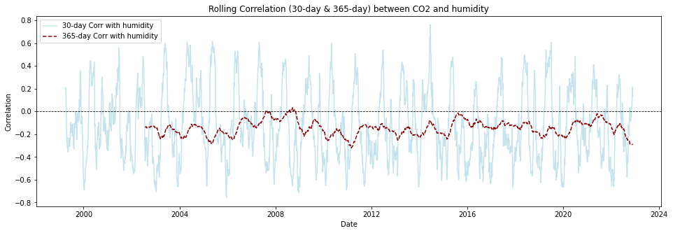

The quantity of CO₂ is determined and described by the chemical term “mole fraction”, defined as the number of carbon dioxide molecules in a given number of molecules of air, after removal of water vapor. For example, 413 parts per million of CO2 (abbreviated as ppm) means that in every million molecules of (dry) air there are on average 413 CO₂ molecules.
In simple terms, atmospheric CO₂ concentration (in ppm) is the fraction of carbon-dioxide molecules in dry air - one part CO₂ for every one million total air molecules.
The Global Monitoring Laboratory (GML) of the National Oceanic and Atmospheric Administration conducts research on: - Greenhouse Gases and Carbon Cycle Feedbacks - Changes in Surface Radiation, Clouds, and Aerosols - Recovery of Stratospheric Ozone
All data regarding the Carbon Cycle Greenhouse gasses is taken directly from the Global Monitoring Laboratory, specifically from the Mauna Loa Observatory, Hawaii. Subsequently, all data is of the same type - in situ samples taken on a daily/weekly basis
The weather data used has been acquired through the Open-Meteo open-source weather API, at the suitable coordinates and chosen time range.
This research is conducted in order to determine which factors have an effect on CO₂ levels in the environment, as well as assess which ones have the most prominent influence.
1.0.0.1 Importing Libraries
Code
import pandas as pdimport numpy as npimport matplotlib.pyplot as pltimport seaborn as snsfrom scipy.stats import zscorefrom helpers.helpers import (add_missing_one_year, add_missing_ten_years, coerce_into_full_datetime, create_heatmaps, plot_column, plot_entire_df, plot_increase_five_years, summary_stats, plot_rolling_correlations, interpret_p_value, plot_lagged_correlations)from helpers.helpers import (WeatherPairPlotter, GasDistributionVisualizer)from statsmodels.tsa.stattools import adfuller, grangercausalitytestsimport warningswarnings.filterwarnings('ignore')
1.1 Importation of Dataset - CO₂ (Carbon Dioxide)
The initial dataset holds information regarding the CO₂ levels ranging from the year 1974, up to 2025, as well as data on the levels of increase and fequency of measurements. However, the data is severely disorganised and needs cleaing.
2 Cleaning and Organizing Data
Checking for invalid data:
Code
invalid_average = (df_station_co2['median_CO2'] ==-999.99).sum()invalid_1year = (df_station_co2['1 year ago'] ==-999.99).sum()invalid_10years = (df_station_co2['10 years ago'] ==-999.99).sum()print(invalid_average)print(invalid_1year)print(invalid_10years)
18
70
540
The information from the other columns can be used to create a valid datetime format.
The ‘decimal’ column along with the ‘day’ and ‘month’ columns can be used to adjust the datetime index accordingly
The data from the ‘1 year ago’ and ‘10 years ago’ columns is used to include and adjust missing datetimes, thus giving a richer dataframe which would allow us to capture the trend effectively.
Code
df_station_co2 = add_missing_ten_years(df_station_co2) # using the function to create new rows using the '10 year ago' columndf_station_co2 = add_missing_one_year(df_station_co2) # using the function to create new rows using the '1 year ago' columndf_station_co2.drop(df_station_co2[df_station_co2['median_CO2'] ==-999.99].index, inplace=True)
Code
df_station_co2
median_CO2
ndays
1 year ago
10 years ago
increase since 1800
1974-05-19
333.37
5.0
-999.99
-999.99
50.40
1974-05-25
332.95
NaN
NaN
NaN
NaN
1974-05-26
332.95
6.0
-999.99
-999.99
50.06
1974-06-01
332.44
NaN
NaN
NaN
NaN
1974-06-02
332.35
5.0
-999.99
-999.99
49.60
...
...
...
...
...
...
2025-05-25
430.18
5.0
426.80
403.98
146.94
2025-06-01
429.96
7.0
427.20
403.37
146.91
2025-06-08
429.93
7.0
427.25
403.36
147.16
2025-06-15
429.39
6.0
426.85
402.48
146.99
2025-06-22
429.48
6.0
426.94
402.81
147.51
5246 rows × 5 columns
2.1 Importation and Cleaning - N₂O (Nitrous Oxide)
Different types of interpolation have provided the same results regarding the missing values, however the number of rows affected is relatively small in comparison to the entire dataset. Since the dataset is smaller by itself, regular interpolation and filling is used in order to avoid unnecessary loss of data.
2.4 Merging and Organising Greenhouse Gasses dataframes
Code
dfs = [df.copy() for df in [df_station_co2, df_N2O, df_CH4, df_SF6]]for i inrange(len(dfs)): dfs[i].index = pd.to_datetime(dfs[i].index) # Converting index to proper datetime64[ns]start_date = df_station_co2.index.min() # Get the earliest date from df_CO2_meteodfs = [df[df.index >= start_date] for df in dfs]df_combined_gasses = pd.concat( [ dfs[0][["median_CO2"]], dfs[1][["median_N2O"]], dfs[2][["median_CH4"]], dfs[3][["median_SF6"]], ], axis=1, join="inner")
Code
df_combined_gasses
median_CO2
median_N2O
median_CH4
median_SF6
1998-11-29
366.74
315.59
1803.06
4.351
1998-12-12
367.20
315.59
1799.96
4.351
1998-12-13
367.32
315.59
1800.91
4.351
1998-12-19
367.48
315.59
1799.07
4.351
1998-12-20
367.44
315.59
1807.50
4.351
...
...
...
...
...
2022-11-13
417.25
337.65
1951.90
11.413
2022-11-19
418.38
337.01
1948.15
11.305
2022-11-20
418.48
337.93
1958.26
11.425
2022-11-26
417.81
337.02
1954.00
11.394
2022-11-27
417.69
337.51
1952.95
11.405
2408 rows × 4 columns
2.4.1 Merging and Organising CO2 with Weather data
# Creating df on dates when station data and Open Meteo data overlapcommon_dates = df_weather.index.intersection(df_station_co2.index)df_weather = df_weather.loc[common_dates]# Mergingdf_station_column = df_station_co2[['median_CO2']]df_CO2_meteo = df_weather.join(df_station_column, how='inner')
Since CO₂ is the target of interest, plotting all columns would flood the grid, making patterns hard to see.
Temperature, humidity, wind speed and surface pressure are the four classic meteorological drivers most often linked to CO₂ variability, therefore a pairplot provides a clear, representative snapshot without overcrowding the visual.
4.2 Correlation Analysis
4.2.1 Correlation Analysis - CO2 and Weather variables
Surprisingly and unfortunately, there seems to be little to no correlation between the weather data and the average levels of CO2 at this particular location.
However further testing and assessment is needed before drawing final conclusions.
The heatmap shows that surface_pressure and pressure_msi have identical values. To avoid redundancy, surface_pressure was removed.
Pearson’s correlation measures the linear relationship between variables.
The correlation coefficient ranges from -1 to +1, where -1 indicates a perfect negative linear relationship, +1 indicates a perfect positive linear relationship, and 0 indicates no linear relationship.
However, it has a limitation: it only captures linear relationships and can miss other types of relationships between variables.
Kendall’s Tau takes a different approach. Instead of measuring linear relationships, it looks at the concordance between variables - essentially, whether they tend to move in the same direction. It’s measuring the tendency of the variables to increase or decrease together, without assuming anything about the shape of that relationship.
In the context of environmental data like CO2 levels, temperature, and other climate variables, Kendall’s Tau might be particularly useful because environmental relationships aren’t always linear, and the data often contains outliers or follows non-normal distributions.
4.2.3 Rolling Correlations
Code
plot_rolling_correlations(df_combined_inner)

Rolling correlations (also called moving correlations) are a dynamic way to measure how the relationship between two variables changes over time. Unlike a single correlation coefficient that shows one number for an entire dataset, rolling correlations show how the correlation evolves throughout a time series.
Rolling correlations can be used in environmental studies to understand how relationships between variables shift with seasonal or long-term changes.
Code
# Checking for stationarity (Augmented Dickey-Fuller Test)def check_stationarity(series, variable_name): result = adfuller(series.dropna()) p_value = result[1]return p_valuestationarity_results = {col: check_stationarity(df_combined_inner[col], col) for col in df_combined_inner.columns}max_lag =12granger_results = {}# Performing Granger Causality testsfor col in df_combined_inner.columns:if col !="median_CO2": test_result = grangercausalitytests(df_combined_inner[['median_CO2', col]].dropna(), max_lag, verbose=False) granger_results[col] = {lag: test_result[lag][0]['ssr_ftest'][1] for lag inrange(1, max_lag +1)}stationarity_results
The ADF test checks whether a time series data is stationary, which is crucial for many statistical analyses. A stationary time series has consistent statistical properties over time - its mean and variance don’t change.
Granger Causality tests explore whether past values of one variable help predict future values of another. It’s testing the “statistical causality” - though it’s important to note that Granger causality doesn’t necessarily mean actual causation.
Code
# Converting Granger causality test results into a readable dataFramegranger_df = pd.DataFrame.from_dict( {var: [granger_results[var][lag] for lag inrange(1, max_lag +1)] for var in granger_results.keys()}, orient='index', columns=[f'Lag {i}'for i inrange(1, max_lag +1)])granger_df["Interpretation"] = granger_df.apply(lambda row: interpret_p_value(row.values), axis=1)granger_df
Statistics and visualisations show that all four gasses display right-skewed distributions, reflecting steadily rising atmospheric concentrations; the farther the mean sits above the mode, the stronger the upward trend has been.
Most importangly and noticeably, CO₂’s slight bimodality hints at a structural shift in the record, matching the well-known acceleration of emissions after the mid-20th century.
Occasional high outliers in CH₄ and SF₆ (range ≫ IQR) point to episodic emission pulses; e.g., large leaks, fires, or industrial releases.
N₂O is the most stable series—its tight, near-symmetric distribution suggests slower, steadier increases compared with the other gases.
5.1.2 CO2 and Weather Data
The pairplots between CO₂ and the weather provide insights into the interrelated patterns.
First, the upper tail a.k.a. the growing concentratiosn up to 420 ppm, signal the long-term rise.
CO₂ and. temperature - the right slanted cloud indicates that higher air temperatures tends to coincide with higher CO₂, which means there is a mild positive linear relationship; The same logic and pattern shows weak inverse association with relative humidity.
Wind disperses CO₂ - stronger winds tilt the trend line downward, showing they dilute CO₂ locally.
5.2 Conclusions - Correlation Analysis
5.2.1 Analyzing the reson of Pearson, Kendall and Granger
Why Pearson & Kendall Show Weak Correlation, but Granger Shows Strong Causality
The difference lies in how these methods assess relationships.
Pearson and Kendall Correlation measure instantaneous relationships between variables.
Pearson detects linear relationships at a single point in time.
Kendall identifies monotonic (rank-based) relationships, also without considering time. These methods may miss important connections when variables affect each other with a delay — common in climate systems.
Granger Causality captures temporal dependencies. It tests whether past values of one variable help predict future values of another. This makes it ideal for climate data, where effects often appear gradually over weeks or months.
Examples of Delayed Causality in Climate Data
Temperature → CO₂: Rising temperatures can lead to higher CO₂ through ocean release or plant respiration, but the effect is delayed.
Humidity → CO₂: Changes in humidity impact cloud cover and soil moisture, influencing CO₂ absorption over time.
Methane → CO₂: CH₄ breaks down into CO₂, with the effect appearing months later.
Granger Causality reveals these lagged effects, while static correlations like Pearson and Kendall may overlook them.
CO₂ (median_C2O) is non-stationary. This means CO₂ has a trend and may need differencing to make it stationary before modeling. Although the meteorological data is mostly stationary, the gas related datasets (N₂O, CH₄, and SF₆) are non-stationary.
5.2.3 Analyzing Granger Causality (p-values across 1-12 lags)
Lower p-values (< 0.05) indicate strong causality. The smaller the p-value, the more significant the predictive relationship.
Temperature - Strong causality across all lags - Predicts future CO₂ trends
Relative Humidity - Significant up to lag 12 - Influences CO₂ levels, but weaker than temperature
N₂O - Significant causality at longer lags - Has a delayed effect on CO₂
CH₄ Very strong causality - CH₄ changes predict CO₂ variations
SF₆ Moderate causality at higher lags - SF₆ shows long-term predictive power
Temperature and CH₄ have a very strong causal effect and are the strongest predictor of CO₂
The p-values are extremely low, suggesting that past temperature values contain significant information about future CO₂ levels.
This makes sense since methane (CH₄) and CO₂ are both greenhouse gases affected by similar processes.
Humidity, N₂O, and SF₆ also predict CO₂, but to a lesser extent.
5.2.4 Key Observations from 1-Year Lagged Correlation Analysis
Temperature (temperature_2m (°C) shows a periodic pattern, with correlation peaks at approximately 90, 180, and 360 days. This indicates a seasonal influence, where earlier temperature shifts precede changes in CO₂, likely driven by vegetation cycles, ocean uptake, or energy demand patterns.
Relative Humidity (relative_humidity_2m (%)) displays a weak but consistent negative lagged correlation. This suggests that increased humidity may lead to reduced CO₂ levels over time, potentially due to enhanced photosynthetic activity.
N₂O (median_N2O) exhibits delayed positive correlation with CO₂. This may reflect shared industrial and combustion-related emission sources, where increases in N₂O are followed by CO₂ rises.
CH₄ (value_CH4) shows a strong positive lagged correlation. Methane contributes to greenhouse warming and chemically converts to CO₂ in the atmosphere, explaining its predictive relationship.
SF₆ (median_SF6) presents the most stable and persistent correlation with CO₂, indicating long-lived co-emission patterns and alignment with global industrial activity.
5.2.4.1 Interpretation
Temperature and methane emerge as the strongest lagged predictors of CO₂.
The observed delays, spanning from 90 to 360 days, highlight seasonal and systemic effects not captured by instantaneous correlation methods.
Industrial gases like N₂O and SF₆ reveal longer-term trends aligned with CO₂ dynamics, while meteorological variables reflect shorter, cyclical influences.
5.2.5 Key Observations from 5-Year Lagged Correlation Analysis
Temperature (temperature_2m (°C) displays strong multi-year periodicity, with clear peaks approximately every 365 days. This pattern reflects annual climate cycles that influence CO₂ variability through temperature-driven processes.
Relative Humidity (relative_humidity_2m (%)) exhibits an inverse cyclical pattern relative to temperature. The negative correlation suggests that higher humidity is associated with lower future CO₂ levels, potentially due to enhanced vegetation uptake and precipitation-related processes.
CH₄ (value_CH4) and SF₆ (median_SF6) maintain consistently strong positive correlations over multiple years, indicating stable long-term relationships with CO₂, likely driven by common emission sources or atmospheric persistence.
N₂O (median_N2O) shows sustained long-term correlation with CO₂, reflecting delayed but consistent influence, possibly due to overlapping industrial emission patterns.
5.2.5.1 Interpretation
The presence of pronounced annual cycles and persistent long-term correlations highlights the importance of incorporating seasonality and delayed effects in CO₂ forecasting models.
Both natural and anthropogenic drivers contribute to the observed lagged dynamics.
5.2.6 Key Observations from 10-Year Lagged Correlation Analysis
Temperature (temperature_2m (°C) exhibits strong annual oscillations, with clear periodic peaks every ~365 days. These patterns indicate persistent seasonal and multi-year influences on CO₂ concentrations.
Relative Humidity (relative_humidity_2m (%)) shows an inverse correlation to temperature over time. The negative relationship suggests that increased humidity leads to lower future CO₂, likely due to enhanced vegetation growth, precipitation, and natural carbon sink activity.
N₂O (median_N2O) and SF₆ (median_SF6) maintain stable, positive correlations with CO₂ across several years, indicating long-term alignment through shared industrial emission sources and slow atmospheric accumulation.
CH₄ (value_CH4) displays strong correlation in the short to medium term, with a gradual decline beyond the first few years. This suggests a diminishing influence on CO₂ over longer horizons.
Beyond 2,500–3,500 days (7–10 years), correlations across all variables become less stable and more variable. This may reflect the influence of external factors such as climate shifts, regulatory changes, or model limitations at extended time scales.
5.2.6.1 Interpretation
Annual cycles remain clearly evident and should be incorporated into long-term CO₂ forecasting models.
Humidity exerts a delayed inverse influence, potentially linked to its role in regulating carbon sinks.
Industrial gases, particularly CH₄, N₂O, and SF₆, are more relevant for mid-term prediction horizons (1–5 years), while longer-term variability introduces additional uncertainty.